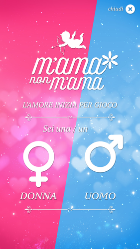
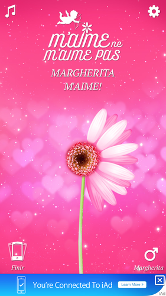

M'ama non m'ama
iOS App - Love me love me not
The love starts like a game
Is there someone you really love and want to know if your love is mutual? With App "loves me, loves me not" the future of your relationship will be unveiled by the petals of the flower.
Write the name of him/her, select the hearts that measure the level of your love and start to browse the daisy petals.
You can also choose the flower that suits your love the most and find out immediately if your ideal partner loves you or not!
L’amore inizia per gioco

C'è qualcuno che ti piace tanto e vuoi sapere se sei corrisposto? Con M'ama non m'ama il futuro della tua relazione sarà svelato dai petali di un fiore.
Scrivi il nome del tuo lui o della tua lei, seleziona i cuoricini che misurano il livello del tuo amore e inizia a sfogliare i petali della margherita.
Puoi scegliere anche il fiore che più assomiglia al tuo amore e scopri subito se il tuo partner ideale t'ama o non t'ama!
L’amour commence pour le jeu

S’il y a quelqu'un que vous aimez vraiment et vous voulez savoir si votre amour est mutuel? Avec "m’aime, ne m’aime pas" App l'avenir de votre relation sera dévoilée par les pétales de la fleur.
Écrivez son nom, sélectionnez les cœurs qui mesurent le niveau de votre amour et commencez à parcourir les pétales de marguerite.
Vous pouvez choisir la fleur qui convient à votre amour le plus et découvrir immédiatement si votre partenaire idéal vous aime ou n’aime pas!
ЛЮБОВЬ НАЧИНАЕТСЯ С ИГРЫ
Есть кто-то, кто тебе действительно нравится и ты хочешь узнать, обоюдны ли ваши чувства? С "любит, не любит" судьба ваших отношений будет разгадана лепестками цветка.
Напиши его/ее имя, выбери количество сердечек, соответствующее степени ваших чувств и начни отрывать лепестки незабудки.
Можешь выбрать именно тот цветок, который наиболее подходит твоим чувствам и узнать, любит ли тебя выбранный партнер или нет.
El amore comienza como un juego

Hay alguien que te gusta mucho y quieres saber si eres correspondido? con "Me quiere no me quiere" el futuro de tu romance será revelado por los pétalos de una flor.
Escribí el nombre de tu el o de tú ella, selecciona el corazoncito que mide el nivel de tu amor y comienza a deshojar los pétalos de la margarita.
Puedes elegir la flor que más se parezca a tu amor y descubrí rápidamente si tu pareja ideal te ama o no te ama.
Features
- Universal App
- iPhone 6 and iPhone 6 Plus optimized
- In-App Purchases Flowers
- Romantic sound effects
Support or Contact
The game is free to play and offer in-app purchases for more flowers and remove ads
Having trouble with this App? Check out the issue at https://github.com/gcirone/Mama-non-mama/issues or contact gianluca.cirone@gmail.com and we’ll help you sort it out.